のっけから便所の画像でスミマセン。
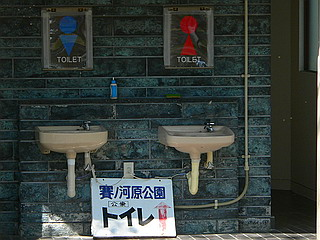
ここは新潟県阿賀野市。
ここに賽の河原という地名があるので寄ってみた。
賽の河原といえば人里離れた荒涼とした土地に無数の石が積まれ風車が林立し、極めて高密度の信仰風景が展開されている場合が多い。ので賽の河原という地名を見ると無性に寄りたくなってしまうのである。
で、行ってみたら何もない広場にトイレがポツンと建っているだけ。
賽の河原どころか公園ですらないじゃないですか！
…と思ったが、広場の一画に小さなお堂が建っている。その脇には数体の石仏が並んでいた。
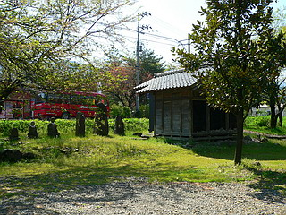
で、その小さなお堂を覗いてみると…
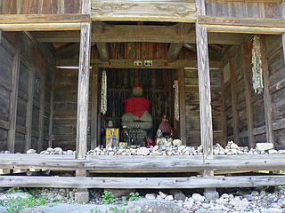
むむむ。
まず目に飛び込んできたのは堂内に積まれた小石。
屋内に石が積まれているとは驚いた。
いきなりの先制カウンターパンチによろめきつつ、さらにその奥を見れば…
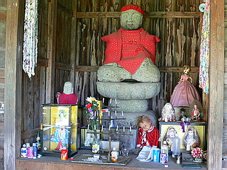
密度としてはそれほどでもないが、数体の人形が奉納されている。
中には汚れながらも薄ら笑いを浮かべているかのような人形もあったりして、明るい陽光の中ひときわディープな光線を放っていたぞ。
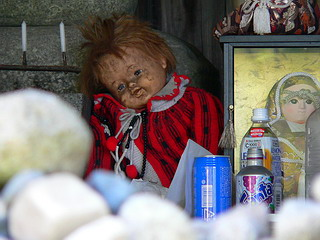
達磨の様な夫婦人形は青森辺りの婚礼人形を模したものなのだろうか。
一見何もない賽の河原だったがひっそりとあの世とこの世の境目の風情が感じられた。
一方、賽の河原の近くにもうひとつ別のお堂がある。
何となく素通りが許されない雰囲気があったので堂内に入ってみる。
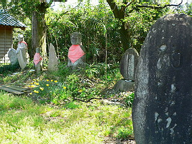
お堂は最近出来たものらしいが、中には古い土人形が並んでいた。
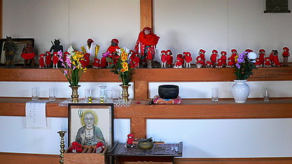
中央にお地蔵さん、左隅に鬼、そしてたくさんの子供。
…そう、ココもまた土人形であの世の世界を表現した賽の河原だったのだ。
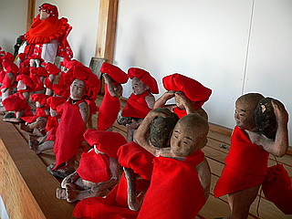
重い石を持たされる子、泣きじゃくる子、と受ける苦難は様々だが、土人形ゆえ表情はイマイチ乏しい。
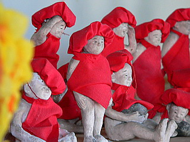 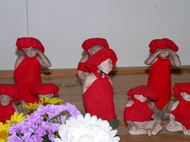
しかしその押さえた表現の中でも充分に賽の河原の寂しさ、辛さが伝わってくるよ。
左端にいる鬼は3体。
何だかマヌケな表情をしているが、そこはプロフェッショナル。
自分の角を削いでも責め苦に余念がない、はず。
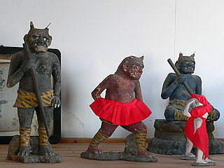 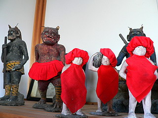
近所のおばあちゃんが賽の河原で苦しんでいる子供達のために赤い布で帽子や前掛けをつくってあげたのだろう。
それにしても虎パンはいた鬼にまで赤いスカートを装着するのは如何なものだろう。いってみれば敵じゃん。
黄色い衣を纏っているのはお地蔵さん。
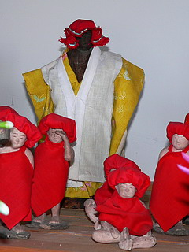
お地蔵さんは全部で３体。
数のうえでは３対３なんだから、ここは黙って見てないで子供達を救ってあげたらどうでしょう？
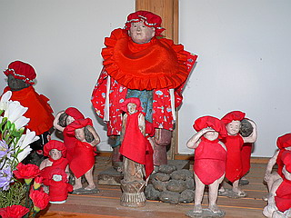 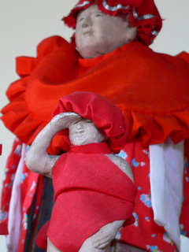
賽銭箱や香炉の脇にまで子供が。
お尻が丸見えですよ。
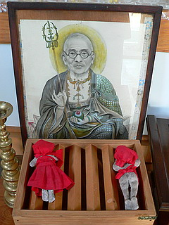 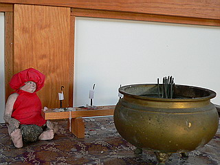
この地蔵堂、先程の賽の河原からいくらも離れていないのと、お堂がやけに新しい事を考えるとひょっとしたら元々賽の河原（公園）にあったモノかもしれない。
いや、憶測ですけど。これだけ近距離に賽の河原に関連する信仰スポットがある、というのも考え難いもので…
土人形賽の河原といえば思い出されるのが上越市の日光寺で見た立体賽の河原。
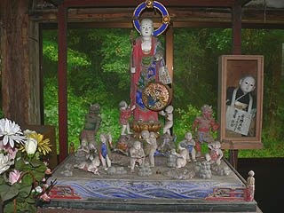←日光寺の立体賽の河原
これ以外にも新潟県には何箇所か土人形の立体賽の河原があるみたいなので今後も新潟のお寺へ行ったら土人形の賽の河原があるかどうか常にチェックする所存であります。